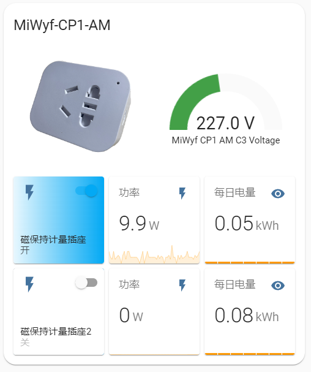
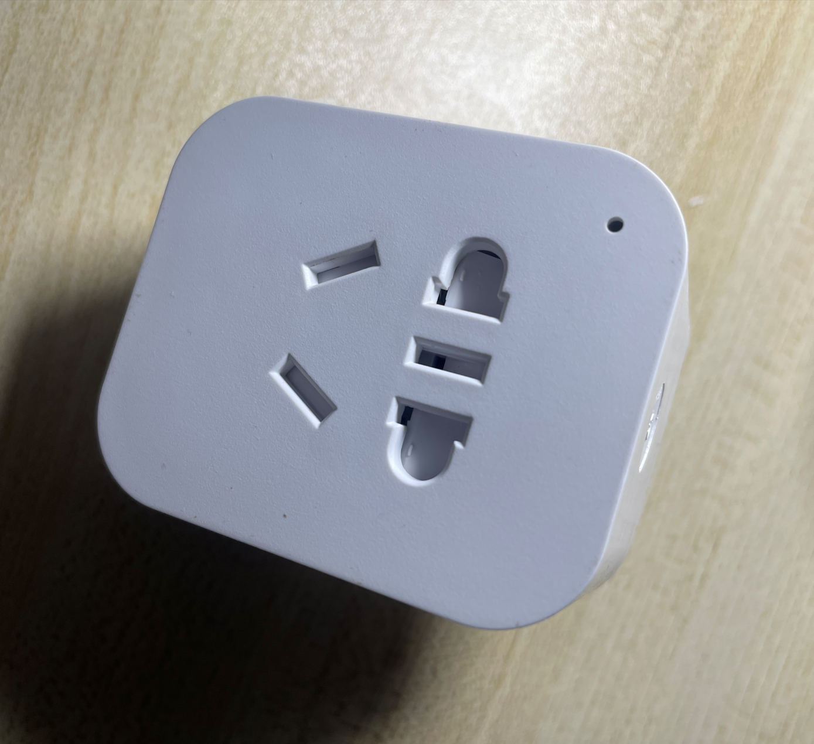
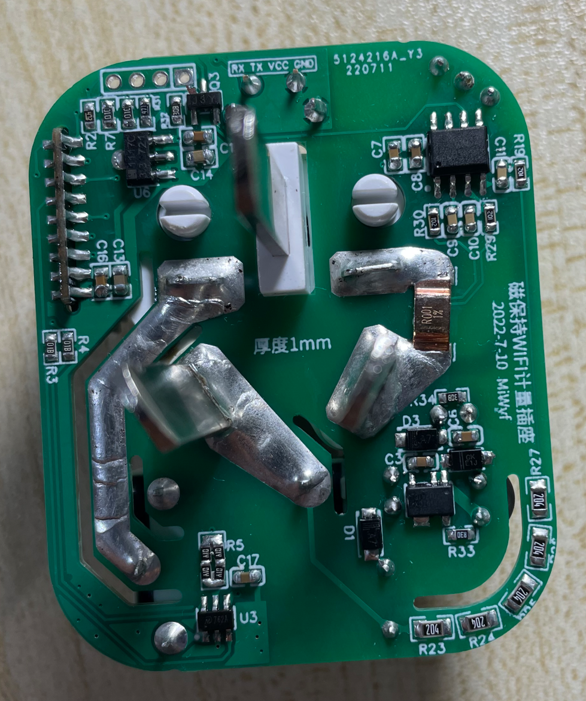
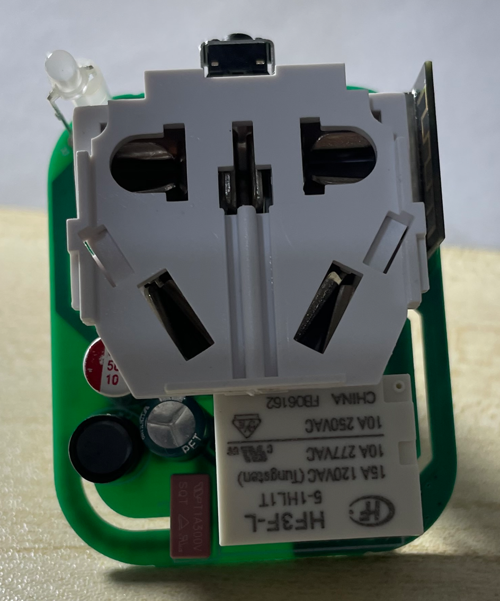
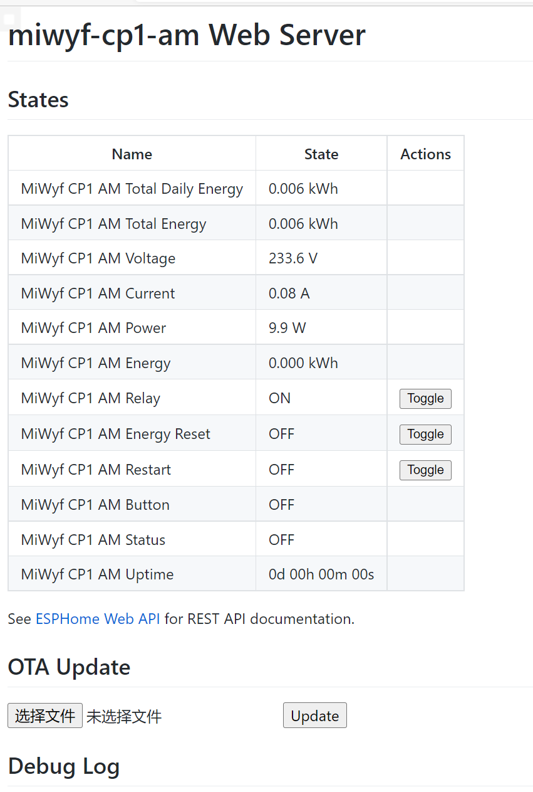

ESP-SmartPlug-Meter WiFi磁保持计量插座制作 接入Home Assistant效果:

硬件图: 


软件: 这是使用罗总框架实现数据获取
(暂时无)
这是使用ESPHome实现数据获取

资源: 本项目改进自(保留磁保持继电器,wifi改为ESP-01M模块,AC-DC改为分立元件,添加计量检测,优化驱动引脚)：
1.[已验证]磁保持WIFI智能插座(220V10A)
2.【二次测试中】智能WiFi物联网插座
感谢作者 oldfox126 和御坂0x1BF52号 大佬。
免责声明: 本设备为个人DIY研究使用,设备内220V电压,不对任何人复制制作产生的任何问题负责。
HLW8032手册: HLW8032_C128023.pdf
MD7620A手册: MD7620A_C920529.pdf
BP2525手册: BP2525.pdf
制作: BOM表和Gerber文件(厚度1.0mm): esp-smartplug-meter.zip 按键用10-13mm高度的 , 板厚1.0, 电阻:200k/0805 1k/0603 普通精度1% , 高精度用0.1%
相关元件来源(或者参考原作者连接)：
[插座外壳（包括里面的220V10A公母一体插座）] -> 购买链接 。
侧按键（注意：要买H=5MM的）-> 购买链接
磁保持继电器K1（注意：要买HF3F-L-05-1HL1T(10A4脚)）-> 购买链接
磁保持继电器驱动芯片MD7620A SOT23-6 ->购买链接
罗总框架实现的固件:
ESPHome固件源码: miwyf-cp1-am.yaml
HTML BOM: ibom.html
开源协议: CC-BY-SA 3.0
miwyf-cp1-am.yaml
1 2 3 4 5 6 7 8 9 10 11 12 13 14 15 16 17 18 19 20 21 22 23 24 25 26 27 28 29 30 31 32 33 34 35 36 37 38 39 40 41 42 43 44 45 46 47 48 49 50 51 52 53 54 55 56 57 58 59 60 61 62 63 64 65 66 67 68 69 70 71 72 73 74 75 76 77 78 79 80 81 82 83 84 85 86 87 88 89 90 91 92 93 94 95 96 97 98 99 100 101 102 103 104 105 106 107 108 109 110 111 112 113 114 115 116 117 118 119 120 121 122 123 124 125 126 127 128 129 130 131 132 133 134 135 136 137 138 139 140 141 142 143 144 145 146 147 148 149 150 151 152 153 154 155 156 157 158 159 160 161 162 163 164 165 166 167 168 169 170 171 172 173 174 175 176 177 178 179 180 181 182 183 184 185 186 187 188 189 190 191 192 193 194 195 196 197 198 199 200 201 202 203 204 205 206 207 208 209 210 211 212 213 214 215 216 217 218 219 220 221 222 223 224 substitutions: device_name: miwyf-cp1-am friendly_name: MiWyf CP1 AM api_pw: !secret api_password ota_pw: !secret ota_password esphome: name: ${device_name} esp8266: board: esp01_1m framework: version: recommended restore_from_flash: true preferences: flash_write_interval: 3s api: password: ${api_pw} reboot_timeout: 0s ota: password: ${ota_pw} web_server: port: 80 time: - platform: homeassistant id: homeassistant_time wifi: ssid: !secret wifi_ssid password: !secret wifi_password ap: ssid: "${device_name}" password: "12345678" captive_portal: status_led: pin: number: GPIO2 inverted: yes binary_sensor: - platform: gpio pin: number: GPIO0 mode: input: true pullup: true inverted: true name: "${friendly_name} Button" on_press: - switch.toggle: relay - platform: status name: "${friendly_name} Status" switch: - platform: gpio name: "${friendly_name} Relay" pin: GPIO13 inverted: true id: relay on_turn_on: - switch.turn_off: ina - switch.turn_on: inb - delay: 100ms - switch.turn_off: ina - switch.turn_off: inb - delay: 100ms on_turn_off: - switch.turn_on: ina - switch.turn_off: inb - delay: 100ms - switch.turn_off: ina - switch.turn_off: inb - delay: 100ms - platform: gpio pin: GPIO5 id: ina - platform: gpio pin: GPIO4 id: inb - platform: template name: "${friendly_name} Energy Reset" icon: "mdi:switch" optimistic: true id: energy_reset turn_on_action: - sensor.integration.reset: my_total_energy - platform: restart name: "${friendly_name} Restart" uart: rx_pin: 14 baud_rate: 4800 sensor: - platform: uptime id: uptime_s update_interval: 60s - platform: total_daily_energy id: my_total_daily_energy name: "${friendly_name} Total Daily Energy" power_id: my_power filters: - multiply: 0.001 unit_of_measurement: kWh - platform: integration id: my_total_energy name: "${friendly_name} Total Energy" sensor: my_power filters: - multiply: 0.001 unit_of_measurement: kWh time_unit: h restore: true min_save_interval: 60s - platform: cse7766 update_interval: 10s current: name: "${friendly_name} Current" voltage: name: "${friendly_name} Voltage" power: id: my_power name: "${friendly_name} Power" filters: - lambda: return x; energy: name: "${friendly_name} Energy" unit_of_measurement: kWh filters: - multiply: 0.001 text_sensor: - platform: template name: "${friendly_name} Uptime" lambda: |- uint32_t dur = id(uptime_s).state; int dys = 0; int hrs = 0; int mnts = 0; if (dur > 86399) { dys = trunc(dur / 86400); dur = dur - (dys * 86400); } if (dur > 3599) { hrs = trunc(dur / 3600); dur = dur - (hrs * 3600); } if (dur > 59) { mnts = trunc(dur / 60); dur = dur - (mnts * 60); } char buffer[17]; sprintf(buffer, "%ud %02uh %02um %02us", dys, hrs, mnts, dur); return {buffer}; icon: mdi:clock-start update_interval: 60s